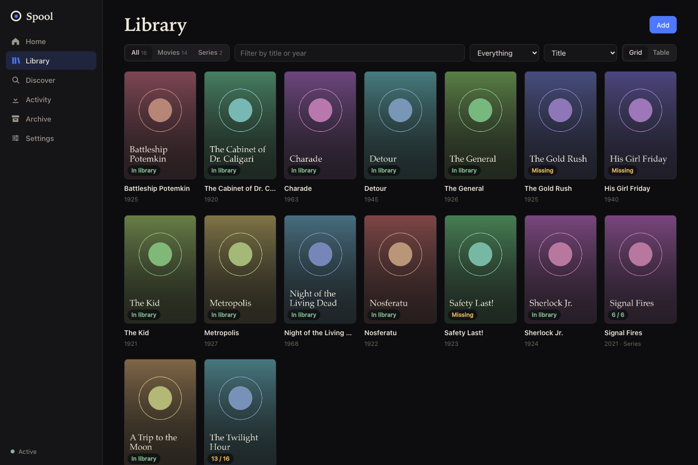
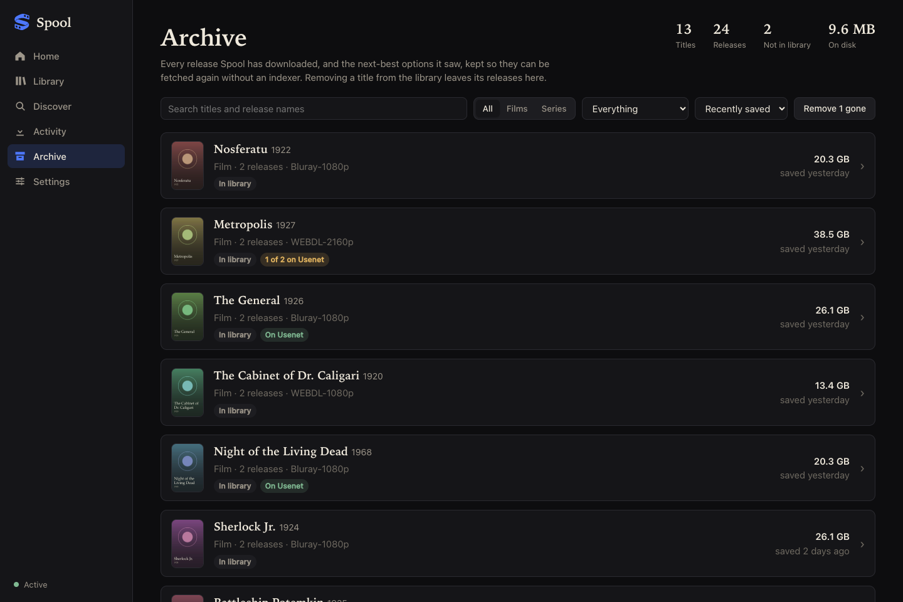
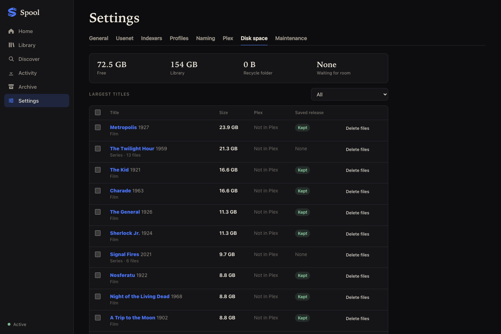
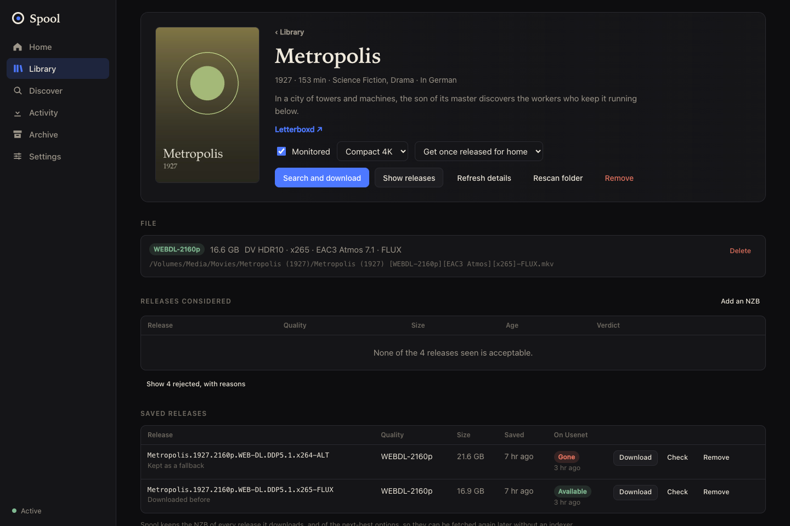

Spool finds, downloads, verifies and files movies and television. One process, one queue and one web app where there used to be three.

Why
The usual setup has one app for movies, another for series and a third to download, each with its own queue, settings and idea of what went wrong. Spool keeps one record from "I want this" to "it is in the library".
One catalog for movies and series, one downloader built in, one place that can say why a release was chosen, what failed and what it is doing about it.
What it does
Each release it sees gets a recorded verdict: accepted, or rejected with the reason. "Why didn't it take that one" always has an answer.
A release is sampled on your Usenet servers first. Posts that have expired are skipped in seconds, not after an hour.
Uncompressed RAR posts are unpacked volume by volume while they arrive, so they need about half the room and no extraction step.
For series it prefers a pack or one group's complete run over a scatter of episodes, and searches by name when an indexer's ids fall short.
Profiles carry a size target. Oversized releases are a last resort, and a file that is too big can be swapped for a smaller copy.
It starts in a mode that changes nothing, journals every import, recycles replaced files and will not write when the media disk is missing.
The archive
Spool keeps the small file that describes every release it downloads, and the next-best options beside it.

Disk space
A full disk stops everything. Spool treats space as part of the job.

For assistants
Spool speaks the Model Context Protocol, so an assistant such as Claude can look at your library and operate it.

Get started
Spool runs on macOS and Linux, natively or in a container, which is also how it goes on TrueNAS and other NAS systems.
# with Docker git clone https://github.com/rewtraw/spool && cd spool mkdir -p data && $EDITOR compose.yaml # set the user and your media path docker compose up -d --build # http://localhost:7979 # or from source: Rust, Bun, and par2, 7zz and ffprobe on the PATH (cd web && bun install && bun run build) cargo run --release -p spool -- serve
Add your folders, a Usenet provider and a Newznab indexer in Settings. Spool starts in shadow mode, recording what it would do and changing nothing, until you switch it to active. Coming from Radarr, Sonarr and SABnzbd? spool migrate brings over your catalog, profiles, indexers and servers. The README has the details.